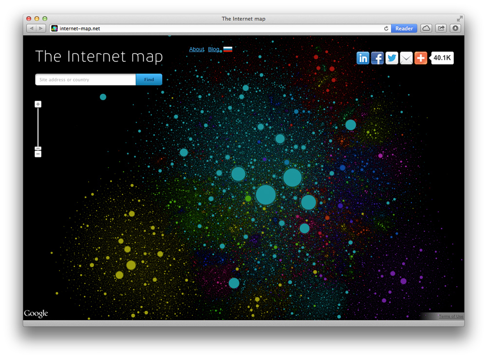

The Internet Map — non-commerce project, a Google Maps based app showing the structure of the WWW.
Project site: internet-map.net
Like any other map, The Internet map is a scheme displaying objects’ relative position; but unlike real maps (e.g. the map of the Earth) or virtual maps (e.g. the map of Mordor), the objects shown on it are not aligned on a surface. Mathematically speaking, The Internet map is a bi-dimensional presentation of links between websites on the Internet. Every site is a circle on the map, and its size is determined by website traffic, the larger the amount of traffic, the bigger the circle. Users’ switching between websites forms links, and the stronger the link, the closer the websites tend to arrange themselves to each other.
